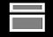

<!DOCTYPE html>

<html>
<link rel="stylesheet" href="Style/style.css">
 <script type="text/javascript" src="Script/toggler.js"></script>
<title>Websoc</title>

<body>


  <!--This is likely the desktop / background.
    All those customizable desktop taskboxes will show up in here
    and everything will be fully customizable.
    Default on the right of desktop will be a slide-out content page of chats and javascript file not runninuser content.
  -->
  <div class="background" style="background-image:url('Registry/Desktop/Backgrounds/background6.jpg');">
<!---->

    </div>

  </body>

<footer>
  <!--
  Searchbar / taskbar goes here by default.
  This will later be a configurable setting for top/bottom left/right.
  TASKBAR - Configure look / color / texture in my cmd.

   -'WIN' BUTTON - show default apps and options.
   -SEARCH BAR - Next to the websoc version of the WIN button.
    Implement a search algorithm here.
   -FRIENDS LIST - a button down here to show friends and if they are online.
   -PINNED APPS - Pin certain apps to taskbar.
    -->
    <div class="flex-container" name="taskbar">
      <div class="flex-item"  style="position:relative; height:50px; width:100%; background-color:#778899; opacity: .6;">
       <button class="flex-item" id="hamburger" onclick=' var targetDiv=document.getElementById("hamburger-box");  if (targetDiv.style.display !== "none") {
            targetDiv.style.display = "none";
          } else {
            targetDiv.style.display = "block";
          }

          ' >
         

         </button>
        </div>
      </div>
      <div class="flex-container" id="hamburger-box" style="width:30%;height:auto; min-height: 100px;background-color:black;opacity:.8; display:none;">
        <div class="flex-item"

        </div>
        </div>
  </footer>

</html>
